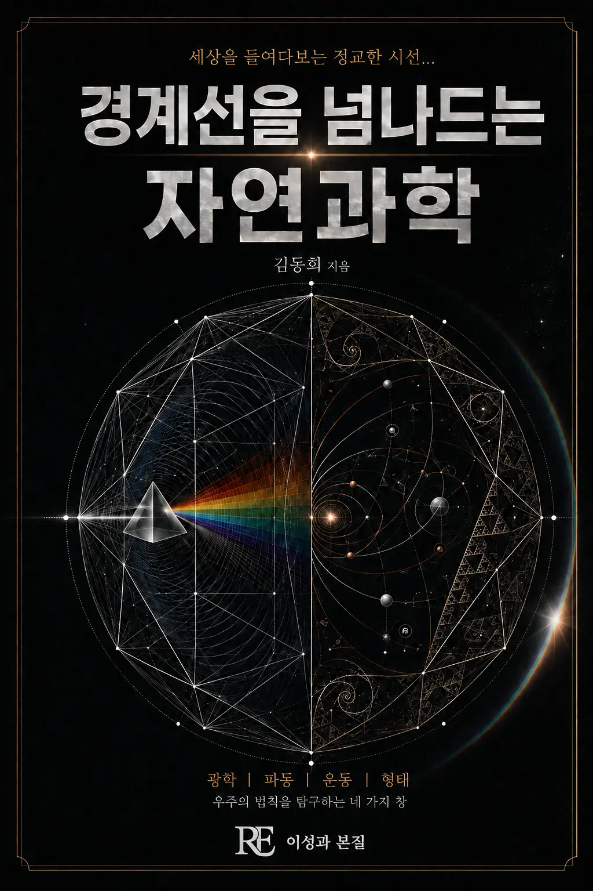

광학, 파동, 운동, 형태라는 네 개의 창을 통해 경계선 상의 필연적 의문을 들여다 본다. 근대 이전 분과로 갈라지기 전, 세계를 바라보았던 자연철학의 감각을 현대 과학의 언어로 되살리는 시도.
기획 의도
오늘날 과학은 지나치게 세분화되어 각 분과가 서로의 언어를 잊어버렸습니다. 이 책은 뉴턴 이전, 세계를 하나의 눈으로 바라보았던 자연철학의 감각을 되살려 광학·파동·운동·형태라는 네 가지 창으로 우주의 법칙을 다시 들여다봅니다. 분과를 가로지르는 사유를 통해 과학을 하나의 세계관으로 다시 만나게 하는 것이 이 책의 목표입니다.
예상 독자
과학의 세부 지식보다 그 배후의 통일된 원리에 관심 있는 독자, 자연과학과 인문학을 함께 사유하고 싶은 교양 독자.
목차
프롤로그 · 경계 위에서: 상(像)과 법칙 사이
1부. 무엇을 보는가 — 법칙이 처음 눈에 맺히는 자리
- 1장 렌즈를 투과하는 세계
- 2장 빛의 경로와 최단 시간의 미학
- 3장 편광과 박막 간섭
2부. 어디까지 볼 수 있는가 — 경계가 흔들리는 자리
- 4장 하늘의 푸름과 무지개의 각도
- 5장 회절이라는 한계와 이중 슬릿
- 6장 공명과 도플러 효과
3부. 하나의 법칙, 두 세계 — 국소적 균형과 전역적 질서의 경계
- 7장 내행성의 위상과 타원 궤도
- 8장 천체 운동의 조화와 중력의 균형
- 9장 바다를 끌어당기는 기조력과 자전축
4부. 형태와 열 — 경계가 무너지고 다시 서는 자리
- 10장 자연의 기하학과 구조적 효율
- 11장 엔트로피와 상전이
- 12장 플라톤적 본질과 자연의 수식
에필로그 · 경계 너머, 다시 일상으로
도서목록으로 돌아가기